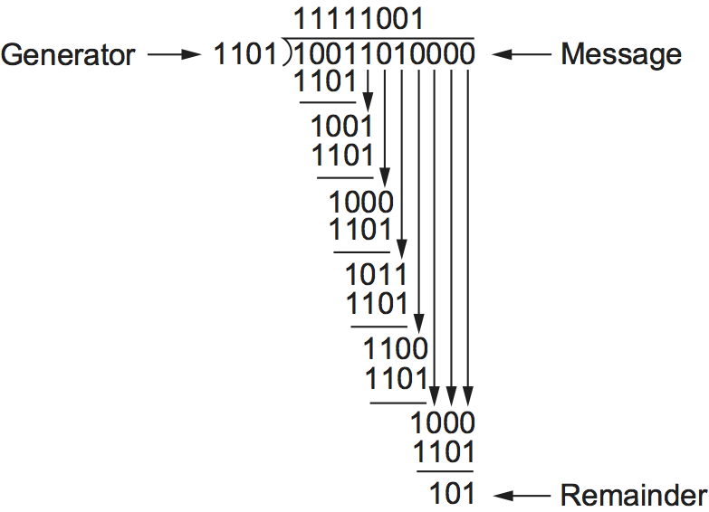
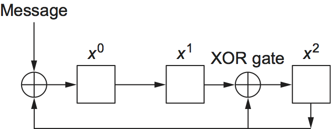

2.4 오류 검출
1장에서 설명했듯이 프레임에는 때때로 비트 오류가 섞여 들어간다. 이는 예를 들어 전기적 간섭이나 열 잡음 때문에 발생한다. 특히 광 링크에서는 오류가 드물지만, 이런 오류를 검출하여 적절한 조치를 취할 수 있는 메커니즘이 여전히 필요하다. 그렇지 않으면 사용자는 방금 전까지는 문제없이 컴파일되던 C 프로그램이, 그 사이에 네트워크 파일 시스템을 통해 복사되었다는 사실 말고는 달라진 것이 없는데도, 왜 갑자기 구문 오류를 일으키는지 의아해하게 된다.
컴퓨터 시스템에서 비트 오류를 다루는 기법의 역사는 적어도 1940년대까지 거슬러 올라간다. 해밍 코드와 리드-솔로몬 코드는 천공 카드 판독기, 자기 디스크 저장 장치, 초기 코어 메모리 등에 쓰이도록 개발된 대표적인 예다. 이 절에서는 네트워킹에서 가장 흔히 사용되는 오류 검출 기법 몇 가지를 설명한다.
오류를 검출하는 것은 문제의 한 부분일 뿐이다. 다른 한 부분은 검출된 오류를 바로잡는 것이다. 메시지 수신자가 오류를 발견했을 때 취할 수 있는 기본적인 접근은 두 가지다. 하나는 메시지가 손상되었음을 송신자에게 알려, 송신자가 그 메시지의 사본을 다시 전송하도록 하는 방법이다. 비트 오류가 드물다면 재전송된 사본은 높은 확률로 오류가 없을 것이다. 다른 방법으로는, 어떤 오류 검출 알고리즘은 메시지가 손상된 뒤에도 수신자가 올바른 메시지를 복원할 수 있게 해 주는데, 이런 알고리즘은 아래에서 다룰 오류 수정 코드에 의존한다.
전송 오류를 검출하는 가장 흔한 기법 중 하나는 순환 중복 검사(CRC)라 불리는 기법이다. 이는 이 장에서 다루는 거의 모든 링크 계층 프로토콜에서 사용된다. 이 절에서는 CRC의 기본 알고리즘을 개괄하지만, 그에 앞서 여러 인터넷 프로토콜에서 사용하는 더 단순한 체크섬 방식부터 설명한다.
모든 오류 검출 방식의 기본 아이디어는 오류가 들어갔는지 판단할 수 있도록 프레임에 중복 정보를 덧붙이는 것이다. 극단적으로는 데이터 전체를 두 벌 전송한다고 상상할 수 있다. 수신 측에서 두 사본이 동일하다면 둘 다 올바를 가능성이 크다. 반대로 둘이 다르면 둘 중 하나 또는 둘 다에 오류가 생긴 것이므로 폐기해야 한다. 하지만 이것은 두 가지 이유에서 좋지 않은 오류 검출 방식이다. 첫째, \(n\)비트 메시지에 대해 \(n\)개의 중복 비트를 보낸다. 둘째, 많은 오류를 놓칠 수 있다. 예를 들어 첫 번째 사본과 두 번째 사본의 같은 비트 위치가 우연히 똑같이 손상되면 검출되지 않는다. 일반적으로 오류 검출 코드의 목표는 상대적으로 적은 수의 중복 비트로 높은 오류 검출 확률을 제공하는 것이다.
다행히 우리는 이 단순한 방식보다 훨씬 더 잘할 수 있다. 일반적으로 \(n\)비트 메시지에 대해 \(k\)개의 중복 비트만 보내면서도, 여기서 \(k\)는 \(n\)보다 훨씬 작으면서도, 꽤 강력한 오류 검출 능력을 제공할 수 있다. 예를 들어 이더넷에서는 최대 12,000비트(1500바이트)의 데이터를 담는 프레임에 32비트 CRC 코드만 필요하며, 보통 CRC-32라고 부른다. 이런 코드는 아래에서 보듯 대부분의 오류를 잡아낸다.
우리가 보내는 추가 비트를 중복이라고 부르는 이유는, 그것이 메시지에 새로운 정보를 더하지 않기 때문이다. 대신 이 비트들은 잘 정의된 알고리즘을 사용해 원래 메시지로부터 직접 계산된다. 송신자와 수신자는 그 알고리즘이 무엇인지 정확히 알고 있다. 송신자는 메시지에 알고리즘을 적용해 중복 비트를 생성한 뒤, 메시지와 그 몇 개의 추가 비트를 함께 전송한다. 수신자가 받은 메시지에 같은 알고리즘을 적용하면, 오류가 없다면 송신자와 같은 결과가 나와야 한다. 수신자는 이 결과를 송신자가 보낸 값과 비교한다. 둘이 일치하면 전송 중 메시지에 오류가 생기지 않았다고 높은 확률로 결론 내릴 수 있다. 일치하지 않으면 메시지나 중복 비트 중 하나가 손상되었음을 확실히 알 수 있고, 적절한 조치, 즉 메시지를 폐기하거나 가능하다면 수정해야 한다.
이 추가 비트를 부르는 용어에 대해 한 가지 덧붙이자. 일반적으로 이것들은 오류 검출 코드라고 부른다. 구체적으로 코드 생성 알고리즘이 덧셈에 기반할 때는 체크섬이라고 부르기도 한다. 인터넷 체크섬이라는 이름은 적절한데, 실제로 덧셈 알고리즘을 사용하는 오류 검사이기 때문이다. 불행하게도 체크섬이라는 말은 CRC를 포함한 모든 형태의 오류 검출 코드를 뜻하는 말로 부정확하게 쓰이는 경우가 많다. 이는 혼동을 줄 수 있으므로, 실제로 덧셈을 사용하는 코드에만 체크섬이라는 말을 쓰고, 이 절에서 설명하는 일반적인 부류의 코드를 가리킬 때는 오류 검출 코드라는 표현을 쓰기를 권한다.
2.4.1 인터넷 체크섬 알고리즘
오류 검출의 첫 번째 접근으로는 인터넷 체크섬을 들 수 있다. 이것은 링크 계층에서 사용되지는 않지만, CRC와 같은 종류의 기능을 제공하므로 여기서 함께 살펴본다.
인터넷 체크섬의 아이디어는 매우 단순하다. 전송되는 모든 워드를 더한 뒤 그 합을 전송하면 된다. 이 결과가 체크섬이다. 수신자는 수신한 데이터에 대해 같은 계산을 수행하고, 그 결과를 전달받은 체크섬과 비교한다. 체크섬 자체를 포함한 전송 데이터 가운데 어느 하나라도 손상되었다면 결과가 일치하지 않으므로, 수신자는 오류가 발생했음을 알 수 있다.
체크섬의 기본 아이디어에는 다양한 변형이 있을 수 있다. 인터넷 프로토콜에서 실제로 사용하는 방식은 다음과 같다. 체크섬을 계산할 데이터를 16비트 정수들의 열로 간주하고, 16비트 1의 보수 산술(아래에서 설명한다)을 사용해 모두 더한 뒤, 그 결과의 1의 보수를 취한다. 이렇게 얻은 16비트 수가 체크섬이다.
1의 보수 산술에서는 음의 정수(-x)를 x의 보수로 표현한다. 즉 x의 각 비트를 반전시킨다. 1의 보수 산술에서 수를 더할 때는 최상위 비트에서 나온 캐리를 결과에 다시 더해야 한다. 예를 들어 4비트 정수에서 -5와 -2를 1의 보수 산술로 더해 보자. +5는 0101이므로 -5는 1010이고, +2는 0010이므로 -2는 1101이다. 캐리를 무시하고 1010과 1101을 더하면 0111이 된다. 하지만 1의 보수 산술에서는 이 연산에서 최상위 비트의 캐리가 발생했으므로 결과를 1 증가시켜 1000을 얻는다. 이는 0111의 비트를 반전해 얻는 -7의 1의 보수 표현과 일치한다.
다음 루틴은 인터넷 체크섬 알고리즘을 직관적으로 구현한 예를 보여 준다.
count 인자는 buf의 길이를 16비트 단위로 나타낸다. 이 루틴은
buf가 이미 16비트 경계에 맞도록 0으로 패딩되어 있다고 가정한다.
u_short
cksum(u_short *buf, int count)
{
register u_long sum = 0;
while (count--)
{
sum += *buf++;
if (sum & 0xFFFF0000)
{
/* 캐리가 발생했으므로 하위 비트로 되감는다 */
sum &= 0xFFFF;
sum++;
}
}
return ~(sum & 0xFFFF);
}
이 코드는 대부분의 기계가 사용하는 2의 보수 대신 1의 보수 산술로 계산이
이뤄지도록 보장한다. while 루프 안에 있는 if 문에 주목하자.
sum의 상위 16비트로 캐리가 넘어가면, 앞의 예와 마찬가지로 sum을
1 증가시킨다.
반복 코드와 비교하면, 이 알고리즘은 메시지 길이와 무관하게 16비트만 추가하면 된다는 점에서 적은 수의 중복 비트를 사용한다는 장점이 있다. 하지만 오류 검출 강도는 아주 뛰어나지는 않다. 예를 들어 하나는 어떤 워드의 값을 증가시키고, 다른 하나는 다른 워드의 값을 같은 양만큼 감소시키는 두 개의 단일 비트 오류는 검출되지 않을 수 있다. CRC 같은 방식에 비해 오류 보호 능력이 약한데도 이런 알고리즘을 사용하는 이유는 단순하다. 소프트웨어로 구현하기가 훨씬 쉽기 때문이다. 경험적으로 이런 형태의 체크섬은 충분히 유용한 것으로 여겨졌는데, 그 이유 중 하나는 이것이 종단 간 프로토콜에서 마지막 방어선 역할을 하기 때문이다. 대부분의 오류는 링크 계층에서 CRC 같은 더 강한 오류 검출 알고리즘이 먼저 잡아낸다.
2.4.2 순환 중복 검사
이제는 오류 검출 알고리즘을 설계할 때의 중요한 목표가, 적은 수의 중복 비트만으로 오류를 검출할 확률을 최대화하는 것임을 알 수 있을 것이다. 순환 중복 검사는 이 목표를 달성하기 위해 꽤 강력한 수학을 사용한다. 예를 들어 32비트 CRC는 수천 바이트 길이의 메시지에서 흔히 일어나는 비트 오류에 대해 강한 보호를 제공한다. CRC의 이론적 토대는 유한체라고 불리는 수학의 한 분야에 뿌리를 두고 있다. 다소 어렵게 들릴 수 있지만, 기본 아이디어는 쉽게 이해할 수 있다.
우선, (n+1)비트 메시지를 \(n\)차 다항식으로 표현한다고 생각해 보자. 즉 최고차항이 \(x^{n}\)인 다항식이다. 메시지의 각 비트 값을 다항식 각 항의 계수로 사용해 메시지를 다항식으로 나타내며, 최상위 비트가 가장 높은 차수의 항을 나타낸다. 예를 들어 10011010이라는 8비트 메시지는 다음 다항식에 대응한다.
따라서 송신자와 수신자가 서로 다항식을 주고받는다고 생각할 수 있다.
CRC를 계산하려면 송신자와 수신자가 제수 다항식 \(C(x)\)에 대해 합의해야 한다. \(C(x)\)는 차수가 \(k\)인 다항식이다. 예를 들어 \(C(x) = x^3 + x^2 + 1\)이라고 하자. 이 경우 \(k=3\)이다. 그렇다면 “\(C(x)\)는 어디서 왔는가?”라는 질문에 대한 답은 대부분의 실제 경우 “책에서 찾아본다”이다. 실제로 \(C(x)\)의 선택은 어떤 유형의 오류를 신뢰성 있게 검출할 수 있는지에 큰 영향을 미치며, 이에 대해서는 아래에서 설명한다. 다양한 환경에 매우 적합한 제수 다항식이 몇 가지 알려져 있고, 정확한 선택은 보통 프로토콜 설계의 일부로 결정된다. 예를 들어 이더넷 표준은 차수 32의 잘 알려진 다항식을 사용한다.
송신자가 \(M(x)\)라는 메시지를 전송하려고 할 때, 이 메시지의 길이가 n+1비트라면 실제로 전송되는 것은 그 (n+1)비트 메시지에 \(k\)비트를 더한 것이다. 우리는 중복 비트를 포함한 완전한 전송 메시지를 \(P(x)\)라고 부른다. 우리가 하려는 일은 \(P(x)\)를 나타내는 다항식이 \(C(x)\)로 정확히 나누어떨어지게 만드는 것이며, 그 방법은 아래에서 설명한다. \(P(x)\)가 링크를 통해 전송되는 동안 오류가 없다면, 수신자는 \(P(x)\)를 \(C(x)\)로 정확히 나눌 수 있어야 하며, 나머지는 0이 된다. 반대로 전송 도중 \(P(x)\)에 어떤 오류가 들어가면, 수신된 다항식은 높은 확률로 더 이상 \(C(x)\)로 정확히 나누어떨어지지 않으므로, 수신자는 0이 아닌 나머지를 얻게 되고 이를 통해 오류가 발생했음을 알 수 있다.
다음 내용을 이해하려면 다항식 산술을 조금 알고 있으면 도움이 된다. 일반적인 정수 산술과 아주 약간 다를 뿐이다. 여기서는 계수가 0 또는 1만 될 수 있고, 계수에 대한 연산이 모듈로 2 산술로 수행되는 특별한 종류의 다항식 산술을 다룬다. 이를 “모듈로 2 다항식 산술”이라고 부른다. 이 책은 수학책이 아니라 네트워킹 책이므로, 여기서는 이 산술의 핵심 성질만 목적에 맞게 정리하자. 다음 성질은 일단 받아들이고 넘어가길 바란다.
\(B(x)\)의 차수가 \(C(x)\)보다 크면, 어떤 다항식 \(B(x)\)도 제수 다항식 \(C(x)\)로 나눌 수 있다.
\(B(x)\)와 \(C(x)\)의 차수가 같으면, \(B(x)\)는 제수 다항식 \(C(x)\)로 한 번 나눌 수 있다.
\(B(x)\)를 \(C(x)\)로 나눌 때 얻는 나머지는, 대응하는 각 계수 쌍에 대해 배타적 논리합(XOR) 연산을 수행해 얻는다.
예를 들어 다항식 \(x^3 + 1\)은 \(x^3 + x^2 + 1\)로 나눌 수 있는데, 두 다항식 모두 차수가 3이기 때문이다. 이때 나머지는 \(0 \times x^3 + 1 \times x^2 + 0 \times x^1 + 0 \times x^0 = x^2\)가 된다. 이는 각 항의 계수를 XOR해서 얻는다. 메시지 관점에서 보면 1001을 1101로 나누었을 때 나머지가 0100이 된다고 말할 수 있다. 이 나머지가 두 메시지의 비트 단위 XOR 결과와 같다는 것을 볼 수 있을 것이다.
이제 다항식을 나누는 기본 규칙을 알았으므로, 더 긴 메시지를 다루는 데 필요한 긴 나눗셈도 할 수 있다. 아래에 예가 나온다.
우리가 만들고자 하는 것은 원래 메시지 \(M(x)\)에서 유도되며, \(M(x)\)보다 \(k\)비트 더 길고, 동시에 \(C(x)\)로 정확히 나누어떨어지는 전송용 다항식이었다는 점을 떠올려 보자. 이는 다음과 같은 방식으로 만들 수 있다.
\(M(x)\)에 \(x^{k}\)를 곱한다. 즉 메시지 끝에 \(k\)개의 0을 붙인다. 이 0-확장 메시지를 \(T(x)\)라고 하자.
\(T(x)\)를 \(C(x)\)로 나누고 나머지를 구한다.
\(T(x)\)에서 그 나머지를 뺀다.
이 시점에 남는 것이 \(C(x)\)로 정확히 나누어떨어지는 메시지라는 것은 자명하다. 또한 결과 메시지는 \(M(x)\) 뒤에 2단계에서 얻은 나머지를 붙인 형태라는 점도 알 수 있다. 나머지는 길이가 최대 \(k\)비트이므로, 3단계에서 그것을 뺀다는 것은 실제로 1단계에서 덧붙인 \(k\)개의 0과 XOR하는 것과 같기 때문이다. 예를 보면 더 분명해질 것이다.
\(x^7 + x^4 + x^3 + x^1\), 즉 10011010이라는 메시지를 생각해 보자. 제수 다항식의 차수가 3이므로 먼저 \(x^3\)을 곱한다. 그러면 10011010000이 된다. 이를 이 경우 1101에 해당하는 \(C(x)\)로 나눈다. 그림 32는 이 다항식 긴 나눗셈 과정을 보여 준다. 앞에서 설명한 다항식 산술 규칙을 적용하면, 긴 나눗셈은 정수를 나눌 때와 거의 같은 방식으로 진행된다. 따라서 예의 첫 단계에서 제수 1101은 메시지의 처음 네 비트(1001)에 한 번 들어가는데, 둘의 차수가 같기 때문이다. 그리고 나머지 100(1101 XOR 1001)을 남긴다. 다음 단계에서는 메시지 다항식에서 자릿수를 하나씩 내려, 다시 \(C(x)\)와 같은 차수를 갖는 다항식, 이 경우 1001이 될 때까지 진행한다. 다시 나머지 100을 계산하고, 계산이 끝날 때까지 이를 반복한다. 계산의 맨 위에 보이는 긴 나눗셈의 “결과” 자체는 사실 그다지 중요하지 않다. 중요한 것은 마지막에 남는 나머지다.
그림 32의 맨 아래를 보면, 이 예의 계산에서 나머지가 101임을 알 수 있다. 따라서 10011010000에서 101을 뺀 값은 \(C(x)\)로 정확히 나누어떨어지며, 이것이 우리가 보내는 값이다. 다항식 산술에서 뺄셈은 논리적 XOR 연산이므로 실제로 보내는 값은 10011010101이다. 앞에서 말했듯이, 이는 결국 원래 메시지 뒤에 긴 나눗셈에서 구한 나머지를 덧붙인 것과 같다. 수신자는 수신한 다항식을 \(C(x)\)로 나누고, 결과가 0이면 오류가 없었다고 결론 내린다. 결과가 0이 아니면 손상된 메시지를 폐기해야 할 수도 있고, 어떤 코드에서는 작은 오류를 수정할 수도 있다 (예를 들어 오류가 한 비트에만 영향을 준 경우). 오류 수정을 가능하게 하는 코드를 오류 수정 코드(ECC)라고 한다.
{kind=link}

그림 32. 다항식 긴 나눗셈을 이용한 CRC 계산.
이제 다항식 \(C(x)\)가 어디서 오는지 생각해 보자. 직관적으로 말하면, 오류가 들어간 메시지를 이 다항식이 정확히 나눌 가능성이 매우 낮도록 \(C(x)\)를 고르는 것이 핵심이다. 전송된 메시지가 \(P(x)\)라면, 오류가 도입되는 것을 또 다른 다항식 \(E(x)\)가 더해지는 것으로 볼 수 있으므로, 수신자는 \(P(x) + E(x)\)를 보게 된다. 오류가 검출되지 않고 지나가려면 수신 메시지가 \(C(x)\)로 정확히 나누어떨어져야 한다. 그런데 \(P(x)\)는 이미 \(C(x)\)로 정확히 나누어떨어진다는 것을 알고 있으므로, 이것이 가능하려면 \(E(x)\) 역시 \(C(x)\)로 정확히 나누어떨어져야만 한다. 요령은 흔한 오류 유형들에 대해 이런 일이 거의 일어나지 않도록 \(C(x)\)를 고르는 데 있다.
흔한 오류 유형 중 하나는 단일 비트 오류이며, 이것이 비트 위치 i에 영향을 미칠 때는 \(E(x) = x^i\)로 표현할 수 있다. 만약 \(C(x)\)의 첫 번째 항과 마지막 항, 즉 \(x^k\)와 \(x^0\)의 계수가 모두 0이 아니도록 선택하면, 이미 두 항으로 이루어진 다항식이 되므로 한 항만 있는 \(E(x)\)를 정확히 나눌 수 없다. 따라서 이런 \(C(x)\)는 모든 단일 비트 오류를 검출할 수 있다. 일반적으로, 다음과 같은 성질을 가진 \(C(x)\)는 아래 유형의 오류를 검출할 수 있음을 증명할 수 있다.
\(x^{k}\) 항과 \(x^{0}\) 항의 계수가 0이 아니면 모든 단일 비트 오류
\(C(x)\)가 적어도 세 항을 갖는 인수를 가지면 모든 이중 비트 오류
\(C(x)\)가 \((x + 1)\) 인수를 포함하면 임의의 홀수 개 오류
버스트 길이가 \(k\)비트보다 짧은 모든 “버스트” 오류 (즉 연속된 오류 비트의 열). 길이가 \(k\)보다 긴 많은 버스트 오류도 검출 가능하다.
\(C(x)\)의 여섯 가지 버전이 링크 계층 프로토콜에서 널리 사용된다. 예를 들어 이더넷은 다음과 같이 정의되는 CRC-32를 사용한다.
CRC-32 = \(x^{32} + x^{26} + x^{23} + x^{22} + x^{16} + x^{12} + x^{11} + x^{10} + x^8 + x^7 + x^5 + x^4 + x^2 + x + 1\)
앞서 오류의 존재를 검출할 뿐 아니라 오류를 수정할 수 있게 하는 코드도 사용할 수 있다고 언급했다. 이런 코드의 세부 사항은 CRC를 이해하는 데 필요한 수학보다도 더 복잡하므로 여기서는 깊이 들어가지 않겠다. 다만 오류 수정과 오류 검출의 장단점은 생각해 볼 만하다.
언뜻 보기에는 수정이 언제나 더 좋아 보인다. 오류 검출만 사용하는 경우에는 메시지를 버리고, 일반적으로는 다른 사본을 다시 전송해 달라고 요청해야 하기 때문이다. 이는 대역폭을 소모하고 재전송을 기다리는 동안 지연도 늘릴 수 있다. 하지만 수정에는 단점도 있다. 일반적으로 오류만 검출하는 코드와 같은 강도, 즉 같은 범위의 오류를 다룰 수 있는 오류 수정 코드를 보내려면 더 많은 중복 비트가 필요하기 때문이다. 따라서 오류 검출은 오류가 발생했을 때만 더 많은 비트를 보내면 되지만, 오류 수정은 항상 더 많은 비트를 보내야 한다. 그 결과 오류 수정은 (1) 무선 환경처럼 오류가 꽤 자주 발생할 수 있거나, (2) 위성 링크로 패킷을 재전송할 때처럼 재전송 비용, 특히 지연 비용이 너무 큰 경우에 가장 유용한 경향이 있다.
네트워킹에서 오류 수정 코드를 사용하는 것을 순방향 오류 정정(FEC)이라고도 부른다. 이는 오류가 발생한 뒤 재전송으로 처리하는 대신, 미리 추가 정보를 보내 오류 수정을 “사전에” 처리하기 때문이다. FEC는 802.11 같은 무선 네트워크에서 흔히 사용된다.
마지막으로, CRC 알고리즘은 겉보기에는 복잡해 보이지만 \(k\)비트 시프트 레지스터와 XOR 게이트를 사용하면 하드웨어로 쉽게 구현할 수 있다는 점을 덧붙이자. 시프트 레지스터의 비트 수는 생성 다항식의 차수(\(k\))와 같다. 그림 33은 앞의 예에서 사용한 생성 다항식 \(x^3 + x^2 + 1\)에 대해 필요한 하드웨어를 보여 준다. 메시지는 최상위 비트부터 시작해 왼쪽에서부터 시프트되어 들어오며, 긴 나눗셈 예와 마찬가지로 메시지 뒤에 붙인 \(k\)개의 0도 함께 들어간다. 모든 비트가 시프트되고 적절히 XOR되면, 레지스터에는 나머지, 즉 CRC가 남는다(오른쪽이 최상위 비트). XOR 게이트의 위치는 다음과 같이 정한다. 시프트 레지스터의 비트를 왼쪽에서 오른쪽으로 0부터 \(k-1\)까지 번호를 붙였을 때, 생성 다항식에 \(x^n\) 항이 있으면 비트 \(n\) 앞에 XOR 게이트를 둔다. 따라서 생성 다항식 \(x^3 + x^2 + x^0\)에 대해서는 위치 0과 2 앞에 XOR 게이트가 놓이는 것을 볼 수 있다.
{kind=link}

그림 33. 시프트 레지스터를 이용한 CRC 계산.